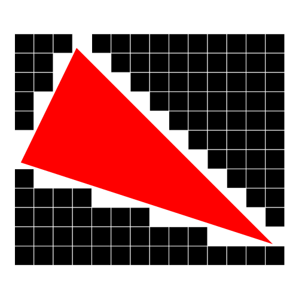
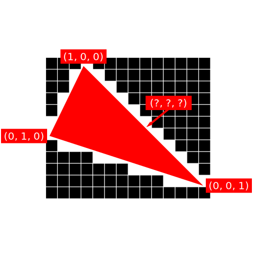

often included directly in binaries as char arrays
opengl compiles them at runtime
written in glsl (opengl shader language)
syntax is similar to c
three.js makes it crazy easy
var material = new THREE.ShaderMaterial(
{
vertexShader: document.getElementById('vs').textContent,
});
glsl data types
first, the usual suspects
bool
int
uint
float
double
they work as expected
vector types
bvec2, bvec3, bvec4
ivec2, ivec3, ivec4
uvec2, uvec3, uvec4
vec2, vec3, vec4
dvec2, dvec3, dvec4
matrices
matnxn | 2 <= n <= 4
matn | 2 <= n <= 4
you can multiply matrices together
mat4x4 world;
mat4x4 view;
mat4x4 projection;
mat4x4 final = world * view * projection;
you can also multiply vectors with them if they are the right size
mat4x4 world;
vec3 position;
position = world * position; // ERROR
position = world * vec4(position, 1); // okay
swizzling
you can access individual components of vectors
vec3 position;
float height = position.y;
access multiple components simultaneously
vec4 position;
position.xy = vec2(0, 0);
let's make an ocean
start with a flat plane in three.js
var geometry = new THREE.Geometry();
for (var x = -50; x < 50; x++)
{
for (var z = -50; z < 50; z++)
geometry.vertices.push(new THREE.Vector3(x, 0, z));
}
ocean animation
shaders are basically stateless
pass in the same input, you always get the same output
how can we make the output change over time?
uniforms
so named because they do not change from vertex to vertex
we will pass one float into the shader each frame, representing time
every vertex will have access to this value
three.js is so great
var uniforms =
{
time: { type: 'f', value: 0 }, // f for float
};
var material = new THREE.ShaderMaterial(
{
vertexShader: document.getElementById('vs').textContent,
uniforms: uniforms,
});
// snip...
var clock = new THREE.Clock();
function render()
{
requestAnimationFrame(render);
uniforms.time.value = clock.getElapsedTime();
renderer.render(scene, camera);
}
render();
and the vertex shader
how can we make each vertex behave differently?
why can't we keep track of anything between vertices?
gpu actually processes many vertices simultaneously
attributes to the rescue
vertex declaration specifies what data is attached to each vertex
position
float3
normal
float3
texture coordinate
float2
blend weights
float4
instance transform
float4
flux compression
float
three.js saves lives
var attributes =
{
offset: { type: 'f', value: [] },
};
var geometry = new THREE.Geometry();
for (var x = -50; x < 50; x++)
{
for (var z = -50; z < 50; z++)
{
geometry.vertices.push(new THREE.Vector3(x, 0, z));
attributes.offset.value.push((x + z) * 0.1);
}
}
var material = new THREE.ShaderMaterial(
{
vertexShader: document.getElementById('vs').textContent,
uniforms: uniforms,
attributes: attributes,
});
and the vertex shader
connecting the dots
everything is made of triangles
a triangle is basically three integers which point to vertices in the vbo
index buffer
the most common vertex attribute
normals
usually precalculated at design-time or during loading
of course three.js can do it for you, and even display them for debugging
let's do something fun with the normal
rasterization
automatically handled by the gpu

yeaaaah if you could go ahead and execute 512 instructions for each one of those bazillion pixels, that'd be great
fragment shader
take inputs, do math, output the pixel color
output is four floats (rgba) ranging from 0 to 1
baby's first fragment shader
what inputs can we have?
uniforms
data passed from the vertex shader, called "varyings"
varyings

vertex shader can output extra data to the pixel shader